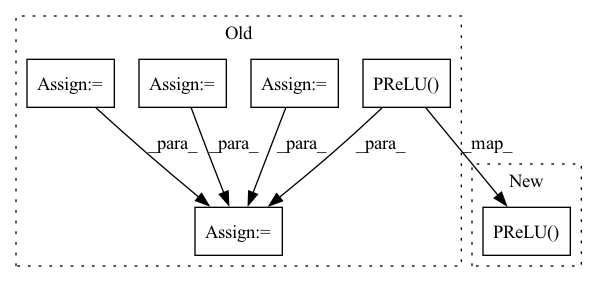

Pattern ID :1214

Before Change
causal=False,
):
// [M, K, H] -> [M, K, H]
depthwise_conv = Conv1d(
in_channels,
kernel_size,
stride=stride,
padding=padding,
dilation=dilation,
groups=in_channels,
bias=False,
)
if causal:
chomp = Chomp1d(padding)
prelu = nn.PReLU()
norm = choose_norm(norm_type, in_channels)
// [M, K, H] -> [M, K, B]
pointwise_conv = Conv1d(out_channels, 1, bias=False)
// Put together
if causal:
net = [depthwise_conv, chomp, prelu, norm, pointwise_conv]
else:
net = [depthwise_conv, prelu, norm, pointwise_conv]
super().__init__(*net)
After Change
if causal:
self.append(Chomp1d(padding))
self.append(nn.PReLU())
self.append(choose_norm(norm_type, in_channels))
// [M, K, H] -> [M, K, B]
In pattern: SUPERPATTERN
Frequency: 3
Non-data size: 6
Instances
Fragment ID: 6237791
Project Name: speechbrain/speechbrain
Commit Name: 393755f5b4058182057f91291b4374f29ad76301
Time: 2020-09-11
Author: plantinga.peter@protonmail.com
File Name: speechbrain/lobes/models/conv_tasnet.py
M Class Name: DepthwiseSeparableConv
N Class Name: DepthwiseSeparableConv
M Method Name: __init__(9)
N Method Name: __init__(9)
M Parent Class: sb.nnet.Sequential
N Parent Class: Sequential
M File Name: speechbrain/lobes/models/conv_tasnet.py
N File Name: speechbrain/lobes/models/conv_tasnet.py
M Start Line: 354
M End Line: 374
N Start Line: 406
N End Line: 431
'>
Before Change
// Define jittor & pytorch array
// ***************************************************************
arr = np.random.randn(16,10,224,224)
jittor_arr = jt.array(arr)
pytorch_arr = torch.Tensor(arr)
// ***************************************************************
// Test PReLU Layer
// ***************************************************************
pytorch_result = tnn.PReLU(10, 2)(pytorch_arr)
jittor_result = jnn.PReLU(10, 2)(jittor_arr)
assert check_equal(pytorch_result.detach().numpy(), jittor_result.numpy()), f"{pytorch_result.mean()} || {jittor_result.mean()}"
pytorch_result = tnn.PReLU(10, -0.2)(pytorch_arr)
jittor_result = jnn.PReLU(10, -0.2)(jittor_arr)
assert check_equal(pytorch_result.detach().numpy(), jittor_result.numpy()), f"{pytorch_result.mean()} || {jittor_result.mean()}"
pytorch_result = tnn.PReLU(10, 99.9)(pytorch_arr)
jittor_result = jnn.PReLU(10, 99.9)(jittor_arr)
assert check_equal(pytorch_result.detach().numpy(), jittor_result.numpy()), f"{pytorch_result.mean()} || {jittor_result.mean()}"
// ***************************************************************
// Test ReLU6 Layer
// ***************************************************************
pytorch_result = tnn.ReLU6()(pytorch_arr)
jittor_result = jnn.ReLU6()(jittor_arr)
assert check_equal(pytorch_result.detach().numpy(), jittor_result.numpy()), f"{pytorch_result.mean()} || {jittor_result.mean()}"
// ***************************************************************
// Test LeakyReLU Layer
// ***************************************************************
pytorch_result = tnn.LeakyReLU(2)(pytorch_arr)
jittor_result = jnn.LeakyReLU(2)(jittor_arr)
assert check_equal(pytorch_result.detach().numpy(), jittor_result.numpy()), f"{pytorch_result.mean()} || {jittor_result.mean()}"
pytorch_result = tnn.LeakyReLU()(pytorch_arr)
jittor_result = jnn.LeakyReLU()(jittor_arr)
assert check_equal(pytorch_result.detach().numpy(), jittor_result.numpy()), f"{pytorch_result.mean()} || {jittor_result.mean()}"
pytorch_result = tnn.LeakyReLU(99.9)(pytorch_arr)
jittor_result = jnn.LeakyReLU(99.9)(jittor_arr)
assert check_equal(pytorch_result.detach().numpy(), jittor_result.numpy()), f"{pytorch_result.mean()} || {jittor_result.mean()}"
if __name__ == "__main__":
After Change
arr = np.random.randn(16,10,224,224)
check_equal(arr, jnn.PReLU(), tnn.PReLU())
check_equal(arr, jnn.PReLU(10, 99.9), tnn.PReLU(10, 99.9))
check_equal(arr, jnn.PReLU(10, 2), tnn.PReLU(10, 2))
check_equal(arr, jnn.PReLU(10, -0.2), tnn.PReLU(10, -0.2))
// ***************************************************************
'>
Fragment ID: 6237834
Project Name: jittor/jittor
Commit Name: 4ff60ee04c156de617222c9e708de08260765a42
Time: 2020-04-29
Author: 576825820@qq.com
File Name: python/jittor/test/test_relu.py
M Class Name: TestRelu
N Class Name: TestRelu
M Method Name: test_relu(1)
N Method Name: test_relu(1)
M Parent Class: unittest.TestCase
N Parent Class: unittest.TestCase
M File Name: python/jittor/test/test_relu.py
N File Name: python/jittor/test/test_relu.py
M Start Line: 34
M End Line: 68
N Start Line: 35
N End Line: 59
'>
Before Change
causal=False,
):
// [M, K, B] -> [M, K, H]
conv1x1 = Conv1d(out_channels, 1, bias=False)
prelu = nn.PReLU()
norm = choose_norm(norm_type, out_channels)
// [M, K, H] -> [M, K, B]
dsconv = DepthwiseSeparableConv(
out_channels,
in_channels,
kernel_size,
stride,
padding,
dilation,
norm_type,
causal,
)
// Put together
net = [conv1x1, prelu, norm, dsconv]
super().__init__(*net)
def forward(self, x, init_params=False):
After Change
self.append(
sb.nnet.Conv1d, out_channels=out_channels, kernel_size=1, bias=False
)
self.append(nn.PReLU())
self.append(choose_norm(norm_type, out_channels))
// [M, K, H] -> [M, K, B]
'>
Fragment ID: 6237784
Project Name: speechbrain/speechbrain
Commit Name: 393755f5b4058182057f91291b4374f29ad76301
Time: 2020-09-11
Author: plantinga.peter@protonmail.com
File Name: speechbrain/lobes/models/conv_tasnet.py
M Class Name: TemporalBlock
N Class Name: TemporalBlock
M Method Name: __init__(9)
N Method Name: __init__(9)
M Parent Class: sb.nnet.Sequential
N Parent Class: Sequential
M File Name: speechbrain/lobes/models/conv_tasnet.py
N File Name: speechbrain/lobes/models/conv_tasnet.py
M Start Line: 282
M End Line: 298
N Start Line: 321
N End Line: 341